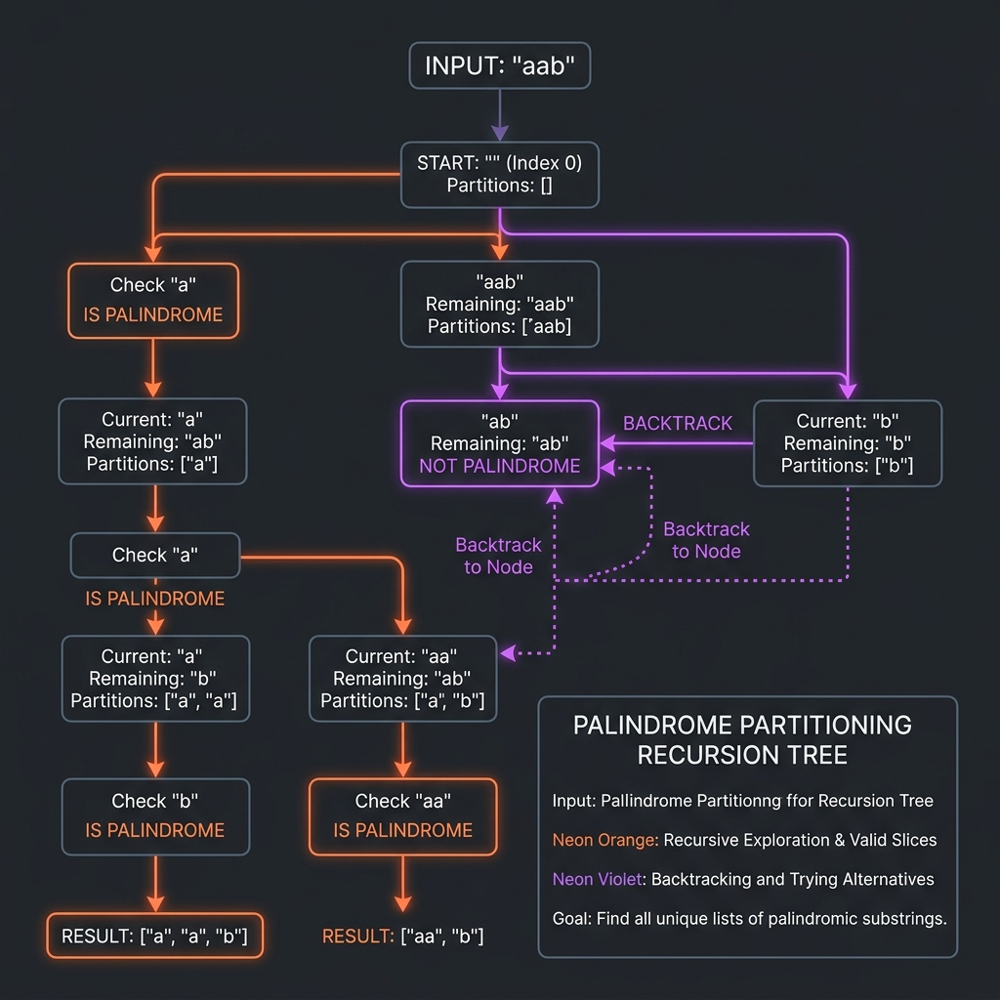

Introduction & Problem Explanation
The Palindrome Partitioning problem asks us to divide a given string s into all
possible groups of substrings such that every substring in a group is a palindrome.
A palindrome is a word or sequence that reads the same backward as forward (e.g., "aba",
"a", "racecar").
For a string like "aab", there are multiple ways to partition it, but only some yield exclusively
palindromic parts:
[["a", "a", "b"], ["aa", "b"]] is valid, whereas ["a", "ab"] is invalid because
"ab" is not a palindrome.
Generating these configurations requires exploring the character boundaries recursively. Backtracking combined
with two-pointer checking is the optimal approach for this problem.

Imagine you have a necklace of colored beads with a pattern like red-red-blue (represented
by "aab"). You want to cut the string of beads into smaller segments such that each segment is symmetrical.
You start from the left: you cut off the first bead "a". Since a single bead is symmetric, you place it in a
tray and move to the remaining beads "ab". You try cutting the next bead "a", which is symmetric, leaving
"b". You cut the final bead "b", which is symmetric. Since you successfully cut the entire pattern
symmetrically, you record your partition: ["a", "a", "b"]. You backtrack (retrieve the bead "b"
and the bead "a") and try a larger cut: cutting "aa". Since "aa" is symmetric, you place it in the tray and
cut the remaining "b". This gives you ["aa", "b"]. By systematically slicing, recursing, and
backtracking, you discover all valid symmetric layouts.
The Algorithmic Approach
DFS Backtracking Search (Time O(N * 2N), Space O(N))
We solve this by trying all possible cut sizes starting from index 0:
- Base Case: If the
startindex reaches the length of strings, we have successfully partitioned the entire string. We create a copy of the currentpathand add it to our results list. - Substring Scan: We loop the ending boundary
endfromstart + 1tos.length(). - Palindrome Validation: For each partition, we extract the substring
s.substring(start, end)and check if it is a palindrome using a two-pointer layout. - Recurse and Backtrack: If the substring is a palindrome, we add it to our active
partition
path, recursively call the function starting at indexend, and then backtrack by removing the substring frompath.
Step-by-Step Execution Walkthrough
Let's trace the backtracking function for s = "aab":
- Step 1 (Root Call):
backtrack(start=0, path=[]).- Scan
end = 1: Substring is"a". Is palindrome? Yes! - Add
"a"to path:path = ["a"]. Recurse to index 1.
- Scan
- Step 2 (Recurse at index 1):
backtrack(start=1, path=["a"]).- Scan
end = 2: Substring is"a". Is palindrome? Yes! - Add
"a"to path:path = ["a", "a"]. Recurse to index 2.
- Scan
- Step 3 (Recurse at index 2):
backtrack(start=2, path=["a", "a"]).- Scan
end = 3: Substring is"b". Is palindrome? Yes! - Add
"b"to path:path = ["a", "a", "b"]. Recurse to index 3.
- Scan
- Step 4 (Base Case reached):
backtrack(start=3, path=["a", "a", "b"]).start == s.length(). Save copy to result.result = [["a", "a", "b"]]. Return.
- Step 5 (Backtrack at index 2):
- Pop
"b". Path becomes["a", "a"]. Loop ends. Return.
- Pop
- Step 6 (Backtrack at index 1):
- Pop
"a". Path becomes["a"]. - Scan continues to
end = 3: Substring is"ab". Is palindrome? No. Skip. - Loop ends. Return.
- Pop
- Step 7 (Backtrack to Root):
- Pop
"a". Path becomes[]. - Scan continues to
end = 2: Substring is"aa". Is palindrome? Yes! - Add
"aa"to path:path = ["aa"]. Recurse to index 2. - Inside recursion: Scan
end = 3: Substring is"b". Is palindrome? Yes! Add"b"to path:path = ["aa", "b"]. Recurse to 3. Save copy.result = [["a", "a", "b"], ["aa", "b"]].
- Pop
Key Code Snippets & Explanations
Here is why the main logic in the solution is important:
s.substring(start, end): Extracts the partition candidates. The starting index shifts forward with each recursive step to ensure we do not reuse processed letters.if (isPalindrome(substr)): The constraint checking filter. If the cut segment is not symmetrical, we prune the search branch immediately, saving computation.path.add(substr); backtrack(end, ...); path.remove(path.size() - 1);: The classic backtrack pattern that explores all alternative slice configurations.
Java Implementation Code
Below is the complete, self-contained Java source code that solves this problem. It also includes a
main method that traces the execution with console outputs.
package io.practise.dsa;
import java.util.*;
public class PalindromePartitioning {
// Backtracking + isPalindrome: Time O(N * 2^N), Space O(N)
public List<List<String>> partition(String s) {
List<List<String>> res = new ArrayList<>();
if (s == null || s.length() == 0) {
return res;
}
backtrack(0, s, new ArrayList<>(), res);
return res;
}
private void backtrack(int start, String s, List<String> path, List<List<String>> res) {
// Base case: If we reached the end of the string, save the current partition path
if (start == s.length()) {
res.add(new ArrayList<>(path)); // Deep copy
return;
}
// Try partitioning the string into all possible substring choices
for (int end = start + 1; end <= s.length(); end++) {
String substr = s.substring(start, end);
// Only proceed if the current partition is a palindrome
if (isPalindrome(substr)) {
// 1. Choose: Add substring to the current partition path
path.add(substr);
// 2. Explore: Recurse on the remaining part of the string
backtrack(end, s, path, res);
// 3. Unchoose: Backtrack by removing the substring
path.remove(path.size() - 1);
}
}
}
private boolean isPalindrome(String s) {
int l = 0;
int r = s.length() - 1;
while (l < r) {
if (s.charAt(l++) != s.charAt(r--)) {
return false;
}
}
return true;
}
public static void main(String[] args) {
PalindromePartitioning solver = new PalindromePartitioning();
String s = "aab";
System.out.println("--- Palindrome Partitioning Demonstration ---");
System.out.println("Input String: " + s);
List<List<String>> partitions = solver.partition(s);
System.out.println("Palindromic Partitions: " + partitions);
}
}
Conclusion
Palindrome Partitioning shows how backtracking can explore combinatorial string slices. By skipping non-palindromic branches early, we prune the search tree to retrieve only valid symmetric partitions efficiently.